Dieses Handbuch beschreibt wörds 0.14.0, eine frühere Version. Handbuch der aktuellen Version (0.15.0) · Frühere Versionen: 0.13.0, 0.12.0, 0.11.1, 0.11.0, 0.10.0, 0.9.0
wörds – Benutzerhandbuch
wörds ist eine Karteikarten-App für das, was man in einer Sprache täglich üben muss: Verbformen und Wörter des Alltags. Jede Karte zeigt eine Seite. Du antwortest im Kopf, drehst die Karte um und bewertest dich ehrlich – oder du tippst die Antwort ein, und wörds prüft sie. wörds berechnet dann, wann du die Karte wiedersehen solltest.
wörds funktioniert offline, braucht kein Konto und zeigt keine Werbung. Mitgeliefert wird Italienisch für Deutschsprachige (Verben A1 und 120 Wörter des Alltags); weitere Sprachpakete lassen sich aus einer Datei oder von GitHub hinzufügen, und du kannst eigene erstellen, auch aus Fotos einer Wortliste.
Dieses Handbuch beschreibt wörds 0.14.0. Die Bildschirmfotos zeigen das Farbschema Terrakotta; deine App kann andere Farben haben.
Inhalt
Erste Schritte
Beim ersten Start installiert wörds die mitgelieferten Inhalte und fragt, was du lernen möchtest. Wähle ein Sprachpaar und tippe auf Los geht's. Weitere Sprachpaare kannst du später installieren und jederzeit wechseln.

Die App hat drei Bereiche, die du immer über die Leiste unten erreichst (auf Tablets: an der Seite):
| Bereich | Wofür |
|---|---|
| Bibliothek | Inhalte ansehen und eine Sitzung starten |
| Fortschritt | Die heutige Wiederholung und was du bisher gelernt hast |
| Einstellungen | Sprache, Farben, Aussprache, tägliche Wiederholung, Sprachpakete |
Die Bibliothek
Die Bibliothek zeigt alles, was du im aktuellen Sprachpaar lernen kannst. Mit den Chips oben wechselst du zwischen den installierten Paketen, zum Beispiel Verben (Konjugation) und Wortschatz (Vokabeln). Jedes Paket ist in Abschnitte (Lektionen) gegliedert, jeder Abschnitt in Einträge: ein Verb mit all seinen Formen oder ein Wort.
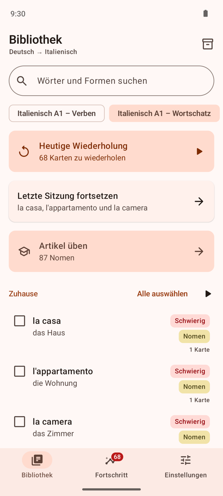
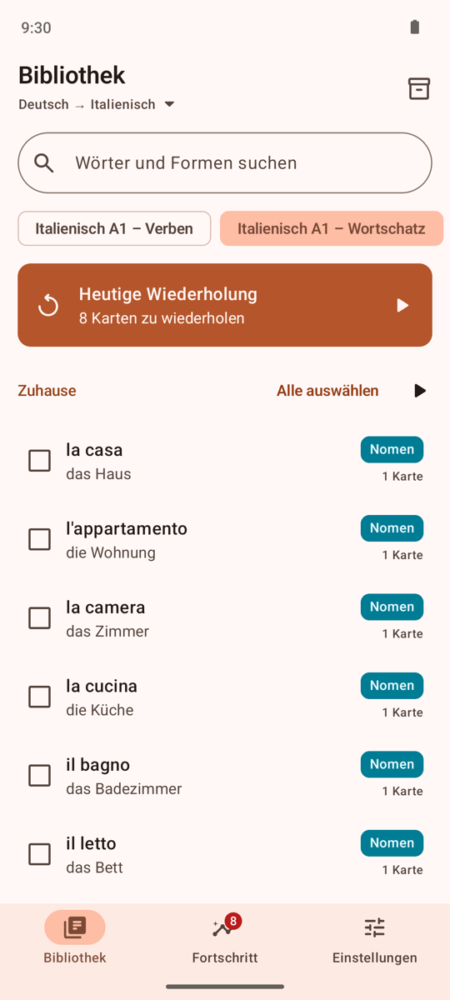
- Suchen findet Wörter und Verbformen im ausgewählten Paket.
- Heutige Wiederholung oben startet deine tägliche Wiederholung oder setzt sie fort (siehe Heutige Wiederholung).
- Letzte Sitzung fortsetzen erscheint, solange eine Sitzung offen ist; sie geht genau dort weiter, wo du aufgehört hast.
- Die ▶-Taste neben einem Abschnitt startet den ganzen Abschnitt.
- Sind zwei oder mehr Sprachpaare installiert, tippst du auf das Sprachpaar unter dem Titel, um zu wechseln.
- Das Kisten-Symbol oben rechts öffnet die Sprachpakete.
Willst du nur einige Einträge lernen, hakst du sie an. Alle auswählen hakt einen ganzen Abschnitt an; Leeren oben hebt die Auswahl auf. Die Taste unten zeigt, wie viele Einträge du gewählt hast.


Eine Sitzung starten
Bevor eine Sitzung beginnt, legst du in einem Blatt fest, wie du üben willst:
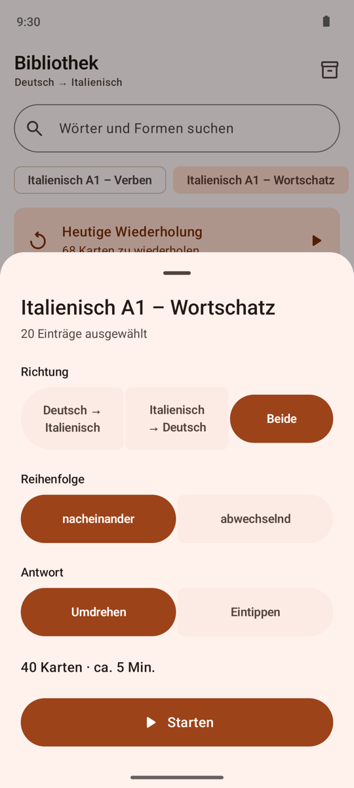
- Richtung: von deiner Sprache in die Lernsprache (Deutsch → Italienisch: du siehst „ich bin" und sagst „io sono"), umgekehrt oder Beide.
- Reihenfolge (nur bei Beide): nacheinander übt alle Karten eines Eintrags erst in der einen, dann in der anderen Richtung. abwechselnd fragt jede Karte im Wechsel in beiden Richtungen ab.
- Zeiten (nur bei Verben): welche Zeitformen du üben willst.
- Antwort: die Karte Umdrehen und dich selbst bewerten, oder die Antwort Eintippen (siehe Die Antwort eintippen). wörds merkt sich deine Wahl für jedes Sprachpaar.
Das Blatt zeigt, wie viele Karten das sind und wie lange es ungefähr dauert. Tippe auf Starten.
Mit einer Karte lernen
Eine Karte zeigt eine Aufgabe. Sag oder denk die Antwort, dann tippe auf die Karte, um sie umzudrehen.

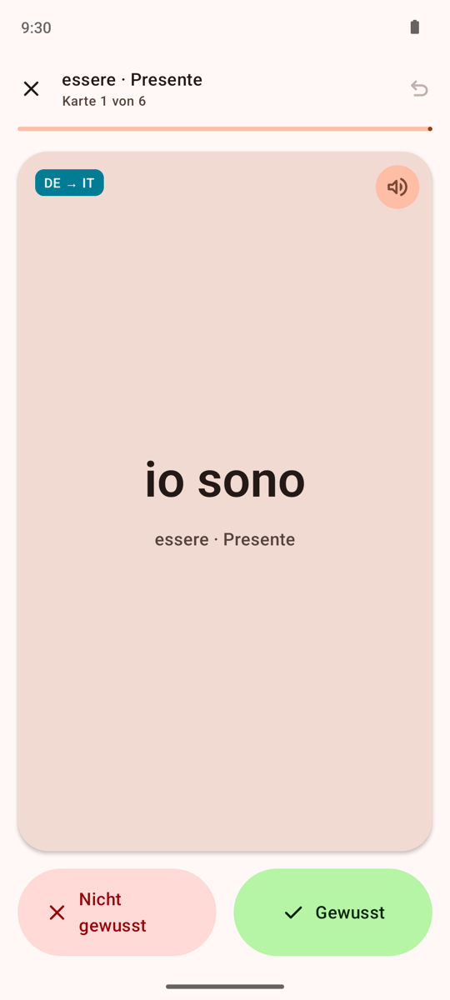
Dann bewertest du dich:
- Gewusst – oder die Karte nach rechts wischen.
- Nicht gewusst – oder die Karte nach links wischen.
Sei ehrlich: wörds plant deine Wiederholungen nach diesen Antworten. Deshalb ist Gewusst auch erst möglich, wenn die Antwort zu sehen ist. Tippst du vor dem Umdrehen auf Nicht gewusst, zeigt die Karte zuerst die Antwort; ein zweites Tippen auf Nicht gewusst geht weiter.
Außerdem auf dem Kartenbildschirm:
- Der Lautsprecher spielt die Aussprache mit der Sprachausgabe deines Geräts ab. Fehlt die Stimme für die Sprache, bietet wörds an, sie zu installieren.
- Rückgängig (der Pfeil oben rechts oder die Meldung unten) nimmt die letzte Antwort zurück.
- Die Pfeile an den Seiten der Karte führen zu früheren Karten und wieder vor; siehe Zurückblättern und korrigieren.
- Das Schild oben links zeigt die Richtung, zum Beispiel DE → IT.
- ✕ schließt die Sitzung. Sie bleibt offen, und du kannst sie später in der Bibliothek fortsetzen.
Vokabelkarten zeigen das Wort und auf der Antwortseite Artikel, Plural und, wenn das Paket einen hat, einen Beispielsatz. Viele Wörter des mitgelieferten Italienisch-Pakets haben außerdem ein Bild ihrer Bedeutung. In den Einstellungen kannst du die Bilder ausschalten.
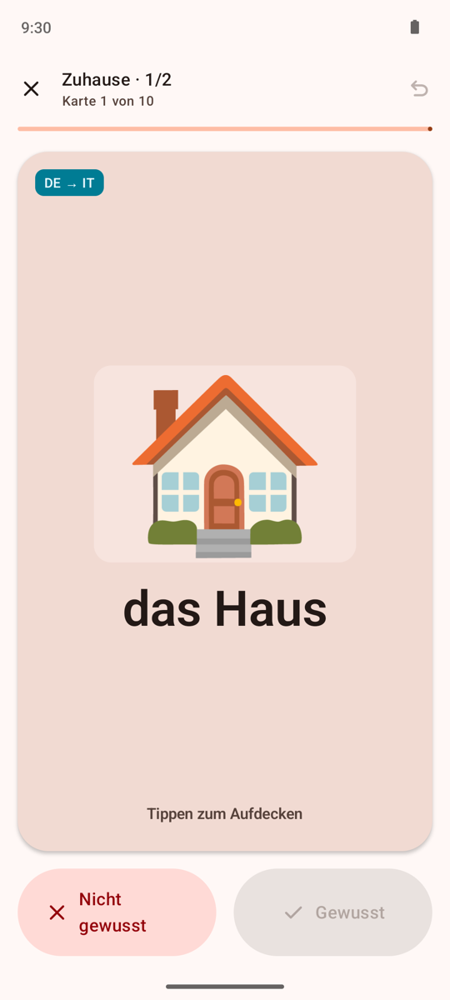

Zurückblättern und korrigieren
Jede Karte hat links einen Pfeil: zurück. Damit schaust du dir die Frage der gerade umgedrehten Karte an, oder die Karten davor. Bist du zurückgegangen, führt ein Pfeil rechts wieder vor, bis zu der Karte, die als Nächstes dran ist. Eine Karte, die du noch nicht beantwortet hast, zeigt nie den Pfeil nach vorn.
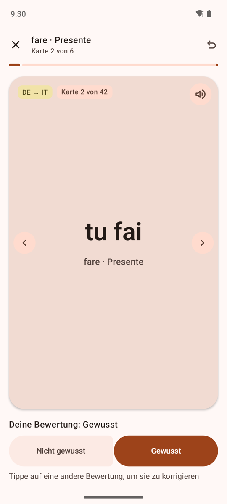
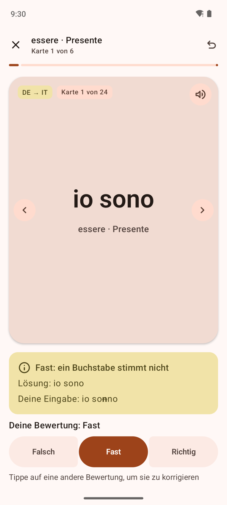
- Normalerweise blättern die Pfeile Seite für Seite: die Antwort, dann die Frage, dann die Antwort der Karte davor und so weiter. In den Einstellungen kannst du stattdessen Karte für Karte wählen; dann zeigt jeder Tipp die Frage einer früheren Karte, und ein Tipp auf die Karte dreht sie um.
- Ein Tipp auf eine umgedrehte Karte zeigt auch wieder ihre Frage.
- Eine frühere Karte zeigt ihre Nummer in der Sitzung und wie du sie bewertet hast. Falsch bewertet? Tippe auf die andere Bewertung (bei eingetippten Antworten: Falsch, Fast oder Richtig). wörds korrigiert sie in deinem Fortschritt; die Sitzung bleibt, wo sie ist.
- Zurückblättern ändert nichts an der Karte, die dran ist: Hast du Nicht gewusst gesagt, bleibt das so, und schon eingetippter Text bleibt stehen.
- Nach einer Gruppe und am Ende einer Sitzung geht Letzte Karte ansehen ebenfalls zurück.
- Mit einer Tastatur machen die Pfeiltasten links und rechts dasselbe.
Im Schulkind-Modus lassen sich frühere Karten ansehen, aber nicht ändern. Rückgängig nimmt die letzte Antwort weiterhin zurück, macht aber aus Nicht gewusst kein Gewusst: Wer die Antwort schon gesehen hat, kann für die Karte nur dieselbe oder eine schlechtere Bewertung geben.
Die Antwort eintippen
Mit Antwort: Eintippen nimmt ein Feld deine Antwort in der Sprache der Kartenrückseite entgegen, und die Tastatur wechselt nach Möglichkeit in diese Sprache. Tasten über der Tastatur fügen Buchstaben ein, die ihr fehlen können, etwa à oder è. Tippe auf Prüfen (oder drücke die Eingabetaste).
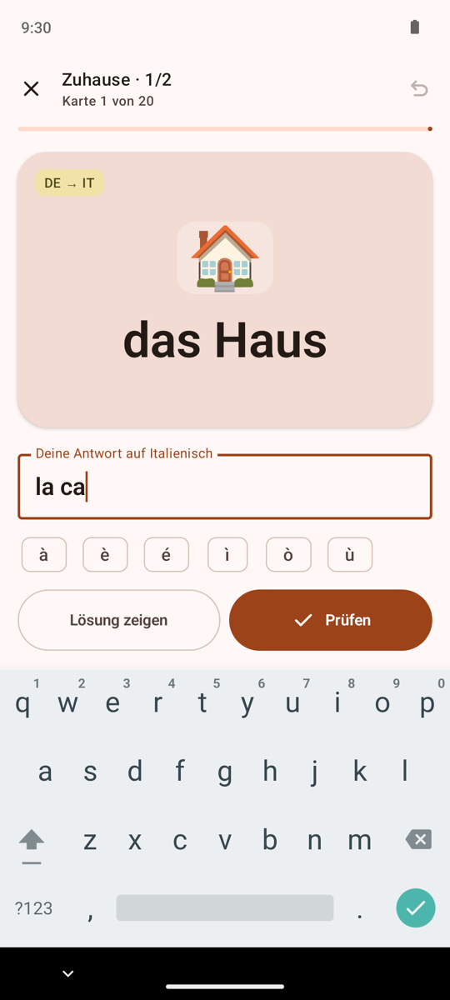
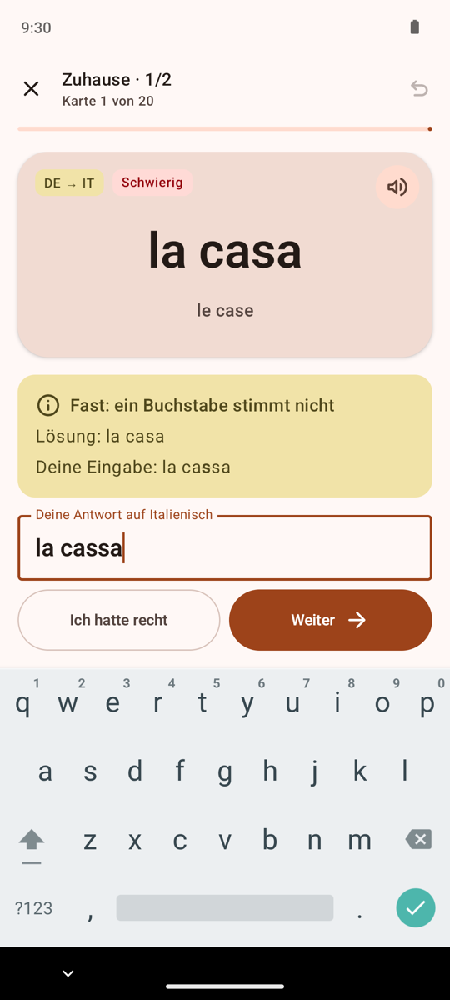
wörds vergleicht deine Antwort mit der Lösung und sagt, was es gefunden hat:
- Richtig zählt als gewusst.
- Fast – ein Buchstabe falsch in einem längeren Wort, nur die Akzente (wenn akzeptiert), der falsche Artikel oder kein Artikel (wenn akzeptiert) – zählt als fast gewusst: Die Karte kommt früher wieder als eine gewusste, aber später als eine vergessene.
- Nicht ganz zählt als nicht gewusst.
Groß- und Kleinschreibung, zusätzliche Leerzeichen und Satzzeichen spielen nie eine Rolle. Bietet eine Lösung Alternativen an (lui/lei è), ist jede davon richtig, und ein Subjektpronomen, mit dem die Lösung beginnt, darf fehlen (sono für io sono). Unter dem Ergebnis zeigt die Lösung, was gefehlt hat oder anders war, und deine Eingabe, was falsch war.
Liegt wörds daneben, tippe auf Ich hatte recht, dann zählt die Antwort als gewusst. Lösung zeigen gibt eine Karte auf; sie zählt dann als nicht gewusst. Was du eintippst, wird nie gespeichert.
Eintippen geht in beiden Richtungen. Für die heutige Wiederholung schaltest du es unter Einstellungen → Tägliche Wiederholung → Antworten eintippen ein.
Ende einer Sitzung
Eine Sitzung ist in Gruppen aufgeteilt: eine pro Verb und Zeit oder eine Handvoll Wörter. Nach jeder Gruppe zeigt wörds, wie es lief und was als Nächstes kommt. Am Ende siehst du das Ergebnis der ganzen Sitzung.


Unbekannte Karten wiederholen startet eine kurze Sitzung nur mit den Karten, die du nicht wusstest. Fertig führt zurück in die Bibliothek.
Heutige Wiederholung
wörds arbeitet mit verteilter Wiederholung: Eine Karte, die du gut kannst, kommt erst nach langer Pause wieder, eine schwierige bald. Dahinter steckt FSRS, ein modernes Planungsverfahren, das für jede Karte schätzt, wie wahrscheinlich du sie noch weißt.
Jeden Tag stellt wörds die heutige Wiederholung zusammen:
- fällige Karten, zuerst die, die du am ehesten vergisst, und
- einige neue Karten aus Paketen, mit denen du schon angefangen hast (20 am Tag, wenn du nichts änderst).
Du startest die Wiederholung oben in der Bibliothek oder im Bereich Fortschritt. Eine Zahl am Bereich Fortschritt zeigt, wie viele Karten warten. Lange Wiederholungen sind in Blöcke zu 20 Karten aufgeteilt. Eine unterbrochene Wiederholung kannst du am selben Tag fortsetzen. Ein Lerntag beginnt um 4 Uhr morgens, damit eine Sitzung spät am Abend noch zu diesem Tag zählt.
Jede Antwort fließt in deinen Plan ein: in einer normalen Sitzung genauso wie in der Wiederholung.
Erinnerung und Widget
Einstellungen → Tägliche Wiederholung → Tägliche Erinnerung schickt zur gewählten Uhrzeit eine Benachrichtigung (19:00 Uhr, wenn du nichts änderst), aber nur an Tagen, an denen die heutige Wiederholung noch Karten für dich hat. Beim Einschalten fragt sie nach der Erlaubnis für Benachrichtigungen; die Benachrichtigung nennt keine Wörter.
Das Widget Heutige Wiederholung für den Startbildschirm zeigt, wie viele Karten warten, und startet die Wiederholung mit einem Tipp. Wenn du für heute fertig bist, sagt es das und öffnet den Fortschritt. Es übernimmt die Farben der App.
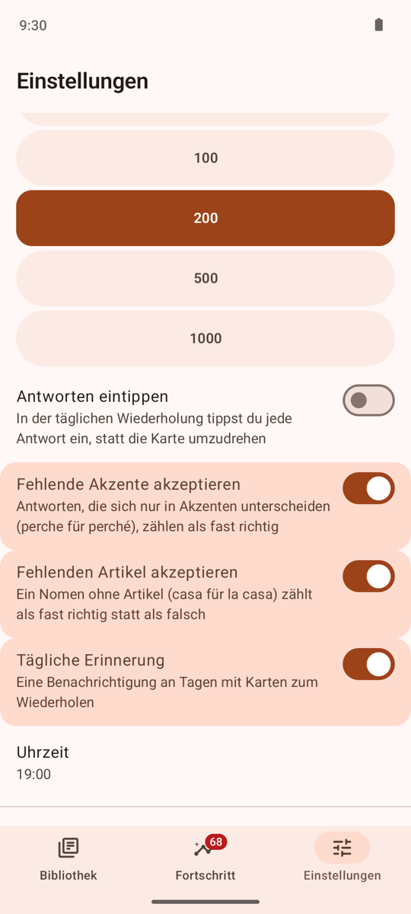
Fortschritt
Der Bereich Fortschritt zeigt die heutige Wiederholung und für jedes Paket, wie weit du bist. Tippe auf ein Paket, um dieselben Zahlen pro Abschnitt zu sehen; innerhalb eines Abschnitts kannst du seine Gruppen einblenden.
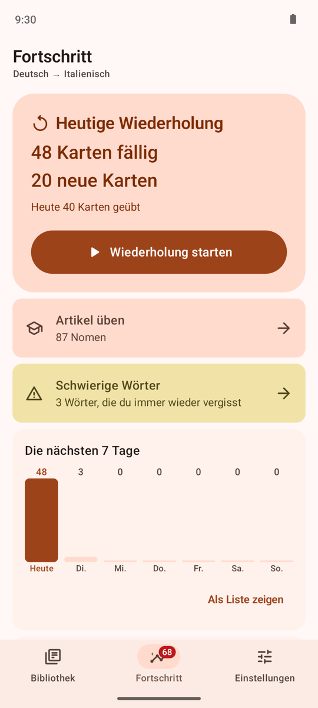
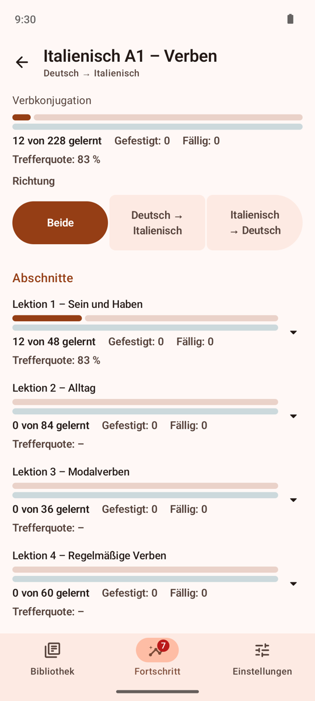
| Angabe | Bedeutung |
|---|---|
| gelernt | Karten, die du mindestens einmal beantwortet hast |
| Gefestigt | Karten, die du auch nach drei Wochen oder mehr noch wüsstest |
| Fällig | Karten, die jetzt zur Wiederholung anstehen |
| Trefferquote | Anteil der Antworten mit Gewusst |
Mit den Tasten unter Richtung siehst du die Zahlen für eine Richtung oder für beide.
Über den Paketen zeigt der Fortschritt:
- Schwierige Wörter: Wörter, die du dreimal oder öfter vergessen hast, nachdem du sie schon konntest. Tippe auf die Karte, um sie zu sehen. In der Liste kannst du ein Wort bearbeiten (ein Wort eines installierten Pakets bearbeitest du in einer Kopie des Pakets, die deinen Fortschritt übernimmt) oder zurücksetzen, um es von vorn zu lernen. Ein Wort verschwindet aus der Liste, sobald du es drei Wochen lang behältst. In der Bibliothek, im Editor und auf der Antwortseite einer Karte sind diese Wörter als Schwierig markiert.
- Die nächsten 7 Tage: wie viele Karten an jedem Tag fällig sind; überfällige zählen für heute.
- Die letzten 12 Wochen: ein Kalender der Tage, an denen du gelernt hast; je dunkler ein Tag, desto mehr Antworten. Als Liste zeigen schreibt beide Diagramme als Tabelle aus.
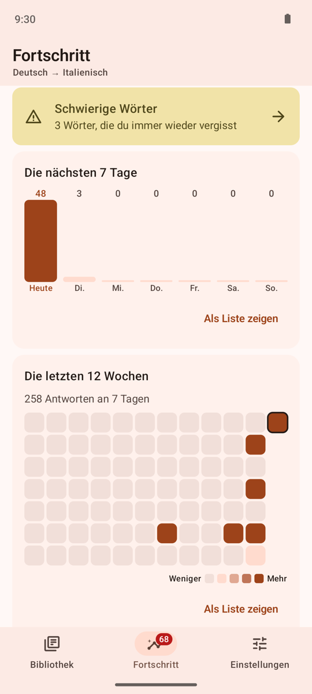
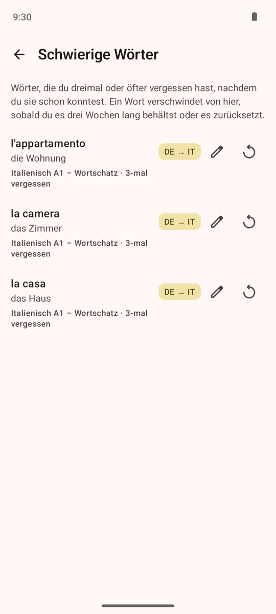
Artikel üben
Artikel üben fragt nur nach dem Artikel von Nomen: casa – heißt es il, lo, la oder l'? Du findest es in der Bibliothek (für das gewählte Paket) und im Fortschritt (für alle Pakete des Sprachpaars), sobald es mindestens fünf Nomen mit ihrem Artikel gibt.
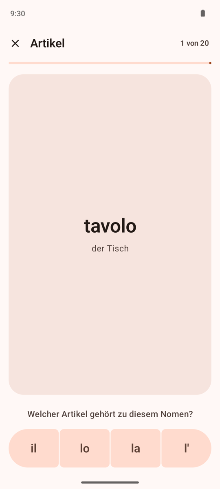
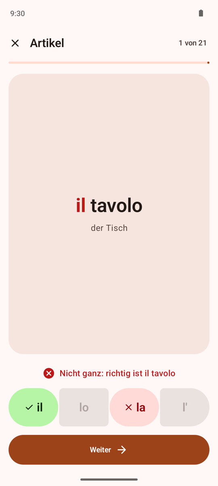
Eine Runde hat bis zu 20 Nomen. Nach einer richtigen Antwort folgt das nächste Nomen von selbst; nach einer falschen zeigt wörds den richtigen Artikel, bis du auf Weiter tippst, und fragt das Nomen am Ende der Runde noch einmal. Die nächste Runde beginnt mit den Nomen, die falsch waren.
Das Artikeltraining ändert weder deinen Plan noch die heutige Wiederholung, aber seine Antworten zählen im Kalender.
Schulkind-Modus und Coins
Der Schulkind-Modus macht wörds für Schulkinder motivierender. Er ist aus, bis du ihn unter Einstellungen → Schulkind-Modus einschaltest.
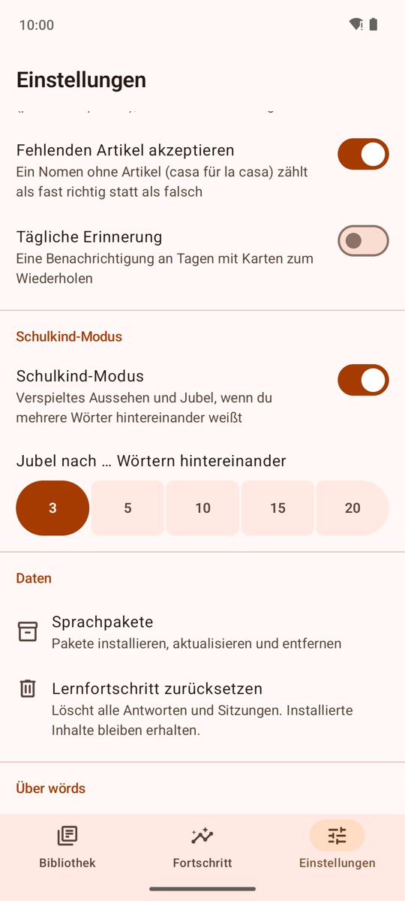
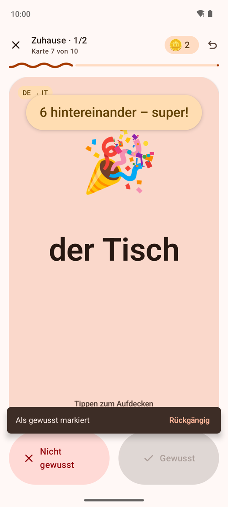
- Verspieltes Aussehen: rundere Formen, kräftigere Farben, größere Knöpfe und Wörter, freundlichere Texte.
- Jubel: Immer wenn dein Kind mehrere Wörter hintereinander weiß (5, sofern du nicht 3, 10, 15 oder 20 wählst), feiert eine kurze Animation das: Konfettiregen, ein wachsendes Herz, ein Faustgruß, ein Daumen hoch, ein Stern, ein Muskel oder eine Konfettikanone. Die nächste Karte lässt sich sofort beantworten. Mit reduzierten Animationen blendet das Bild nur ein und aus.
- Coins: Jeder Jubel bringt einen Coin, und die geschaffte heutige Wiederholung einmal am Tag einen Bonus-Coin. Eingetippte Antworten und das Artikeltraining zählen mit. Wird eine Antwort rückgängig gemacht, ist auch ihr Coin wieder weg, und frühere Karten lassen sich nicht korrigieren. Coins werden pro Sprachpaar gezählt; die obere Leiste zeigt sie.
- Coins einlösen: Macht vorher mit deinem Kind aus, was Coins wert sind (zum Beispiel 20 Coins für einen Besuch in der Eisdiele). Im Fortschritt zeigt die Karte Coins, wie viele Coins zum Einlösen da sind und wie viele an jedem Tag dazukamen. Tippe auf Coins einlösen, wähle die Anzahl und bestätige. Eingelöste Coins bleiben im Diagramm sichtbar, aber grau, die ältesten zuerst; die große Zahl zeigt immer, was noch übrig ist.
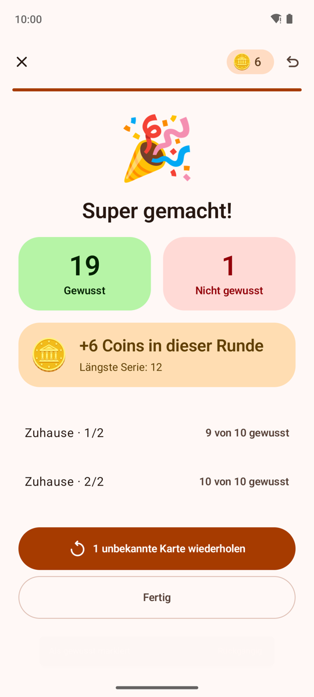
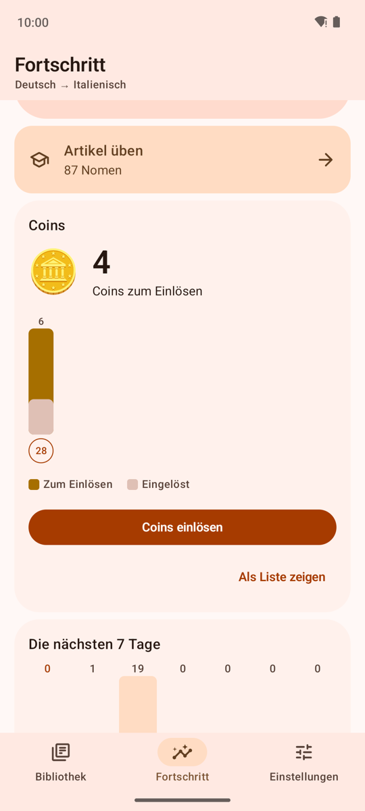
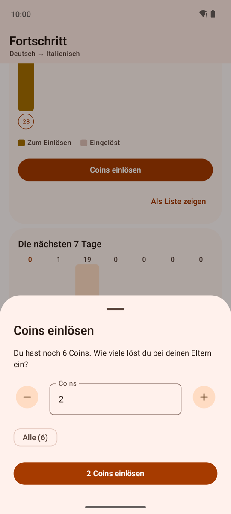
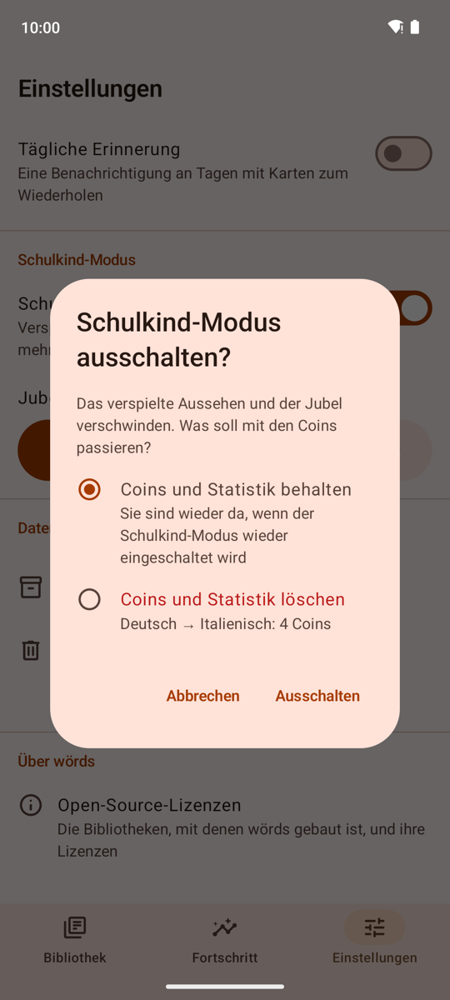
Wenn du den Schulkind-Modus ausschaltest, fragt wörds, was mit den Coins passieren soll: Coins und Statistik behalten (sie sind wieder da, wenn der Modus wieder eingeschaltet wird) oder Coins und Statistik löschen für alle Sprachpaare. Den Lernfortschritt zurückzusetzen behält die Coins.
Sprachpakete
Alle Inhalte kommen in Sprachpaketen. Du öffnest sie über das Kisten-Symbol in der Bibliothek oder über Einstellungen → Sprachpakete.
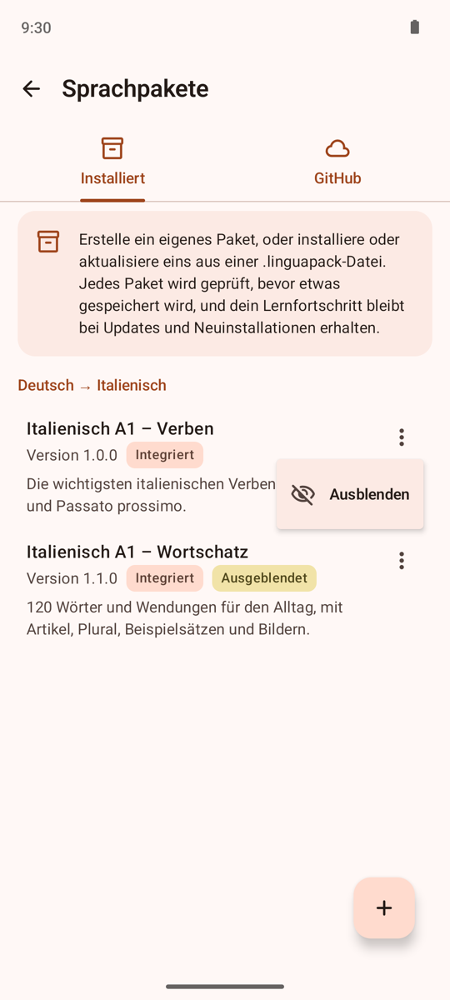

Installiert listet deine Pakete nach Sprachpaar, mit Version und Herkunft (Integriert, Importierte Datei oder GitHub).
- Datei importieren installiert oder aktualisiert ein Paket aus einer
.linguapack-Datei, zum Beispiel aus deinen Downloads. - Ausblenden im Menü eines Pakets (⋮) nimmt es aus der Bibliothek, der heutigen Wiederholung, dem Fortschritt und dem Artikel-Üben, zum Beispiel eine mitgelieferte Sprache, die du nicht lernen willst. Das Paket bleibt in dieser Liste, markiert als Ausgeblendet; Einblenden holt es mit deinem Fortschritt zurück. Ein ausgeblendetes Paket bleibt ausgeblendet, wenn wörds oder das Paket aktualisiert wird.
- Entfernen im Menü löscht ein importiertes Paket. Dein Lernfortschritt bleibt erhalten und ist wieder da, wenn du das Paket erneut installierst. Mitgelieferte Pakete lassen sich nicht entfernen, weil jedes App-Update sie zurückbringt; blende sie stattdessen aus.
GitHub installiert Pakete aus GitHub-Repositorys, die ein Paketverzeichnis (lingua-index.json) veröffentlichen:
- Tippe auf Quelle hinzufügen und gib Inhaber und Namen des Repositorys ein. Du kannst auch einen GitHub-Link in das Feld Inhaber einfügen. Branch und Ordner sind optional.
- Für ein privates Repository fügst du ein Fine-grained-Zugriffstoken hinzu, das nur Lesezugriff auf die Inhalte dieses Repositorys hat. wörds speichert es verschlüsselt, mit einem Schlüssel, der dein Gerät nie verlässt. Ein gespeichertes Token anzeigen, ersetzen oder löschen geht nur mit Fingerabdruck, Gesicht oder Displaysperre.
- Speichere. wörds zeigt die Pakete, die das Repository anbietet. Tippe auf Installieren.


Einmal am Tag prüft wörds im WLAN, ob deine Quellen neue Versionen haben, und zeigt dann Aktualisieren an. Große Downloads laufen mit einer Benachrichtigung im Hintergrund weiter.
Jedes Paket wird geprüft, bevor etwas gespeichert wird. Eine beschädigte Datei, ein Paket, das nicht zu seiner Prüfsumme passt, oder Inhalt, der gegen die Regeln verstößt, wird abgelehnt, und wörds sagt dir, warum. Auf deinem Gerät ändert sich dann nichts.
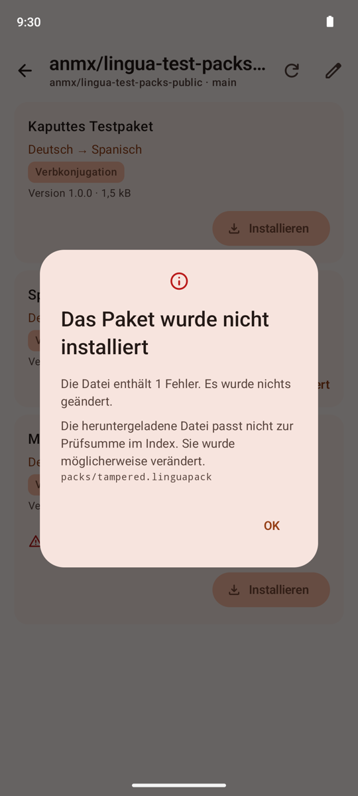
Eigene Pakete
Erstelle ein Paket mit deinen eigenen Wörtern, zum Beispiel den Vokabeln deines Lehrbuchs, und lerne damit wie mit jedem anderen Paket.
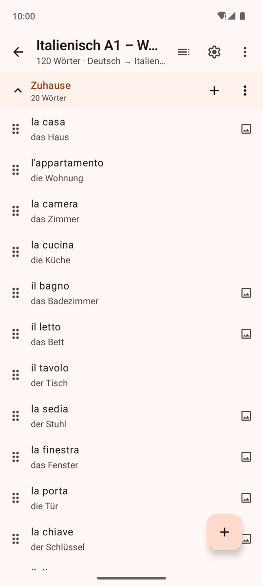
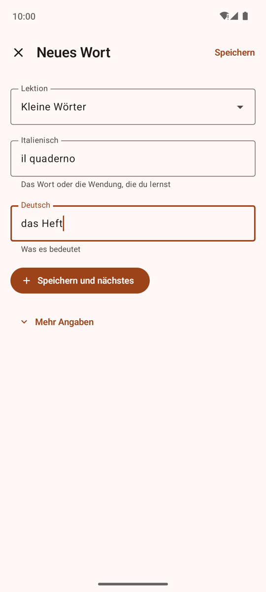
Ein Paket erstellen. Tippe in den Sprachpaketen auf die Plus-Taste und wähle Neues Paket (oder Neues Paket aus Foto, siehe Wörter aus Fotos). Gib einen Titel ein, die Sprache, die du kannst, und die, die du lernst, in welche Richtungen die Karten gelernt werden können (Beide, Erkennen oder Bilden) und eine Lizenz, dann tippe auf Erstellen. Der Editor öffnet sich. Mit Paket-Einstellungen oben im Editor änderst du das alles später; die Sprachen stehen fest, sobald das Paket Wörter enthält.
Wörter hinzufügen. Tippe unten auf die Plus-Taste und wähle Wort hinzufügen. Ein Wort und seine Übersetzung genügen. Speichern und nächstes lässt die Tastatur offen, so tippst du eine ganze Liste ab. Mehr Angaben ergänzt Wortart, Genus, Plural, einen Beispielsatz und ein Bild; gib dem Bild eine Beschreibung, die Screenreader vorlesen. wörds weist dich auf ein Wort hin, das schon im Paket ist. Alles wird laufend gespeichert, und du kannst das Paket sofort lernen.
Lektionen gruppieren die Wörter wie die Kapitel eines Lehrbuchs. Du kannst eine Lektion allein lernen, und ihre Reihenfolge bestimmt, welche neuen Wörter in deiner täglichen Wiederholung zuerst kommen. Mit Lektionen oben im Editor legst du sie an, benennst sie um, sortierst und löschst sie; Lektion hinzufügen im Menü der Plus-Taste unten legt ebenfalls eine an, und die Plus-Taste im Kopf einer Lektion fügt direkt dort ein Wort hinzu.
Wörter ändern. Tippe auf ein Wort, um es zu bearbeiten; sein Lernfortschritt bleibt erhalten. Weitere Optionen → Fortschritt zurücksetzen lässt dich es von vorn lernen, Wort löschen entfernt es. Ziehe ein Wort am Griff, um es umzusortieren, oder über den Kopf einer Lektion hinweg, um es in diese Lektion zu verschieben. Halte ein Wort gedrückt, um mehrere auszuwählen; die Leiste unten verschiebt sie dann in eine andere Lektion (In Lektion verschieben) oder in eine neue (Neue Lektion) oder löscht sie (Löschen). Mit TalkBack findest du dieselben Aktionen im Aktionsmenü jedes Worts und jeder Lektion.
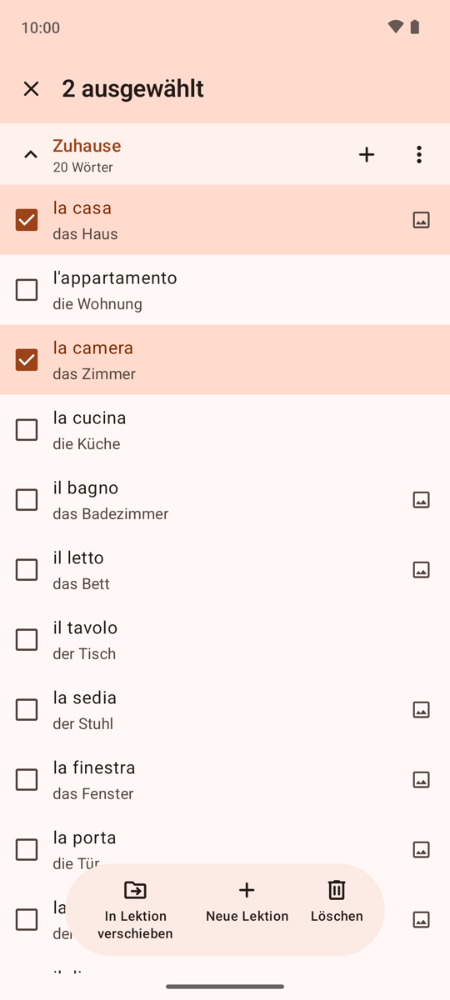
Ein installiertes Paket bearbeiten. Installierte Pakete lassen sich nicht ändern. Ihr Menü (⋮) bietet Zum Bearbeiten duplizieren: wörds legt eine bearbeitbare Kopie an, die deinen Lernfortschritt behält, und blendet das Original aus (Ausgeblendet). Einblenden holt es zurück. Deine eigenen Pakete sind als Bearbeitbar markiert; ihr Menü hat Bearbeiten, Als Datei exportieren, Teilen, Duplizieren, Ausblenden und Löschen.
Exportieren und teilen. Als Datei exportieren speichert dein Paket als .linguapack-Datei in einem Ordner deiner Wahl, Teilen schickt es an eine App, und Alle deine Pakete exportieren (oben in den Sprachpaketen) schreibt alle in einen Ordner. Die Lizenz, die du gewählt hast, geht mit der Datei. Wer wörds hat, öffnet die Datei mit Datei importieren; sie kommt als bearbeitbares Paket an. Ist das Paket schon da, wähle Ersetzen (Wörter, die in beiden sind, behalten ihren Lernstand) oder Beide behalten.
Wörter aus Fotos
wörds kann eine gedruckte Wortliste aus Fotos lesen, damit du sie nicht abtippen musst. Der Text wird auf deinem Gerät gelesen; deine Fotos werden nie hochgeladen.
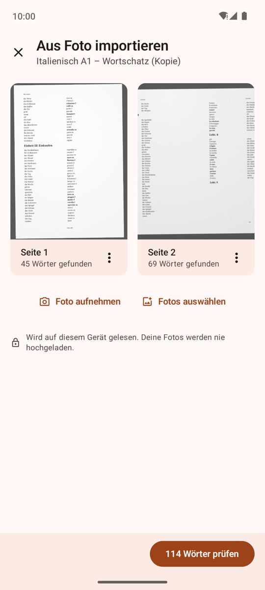
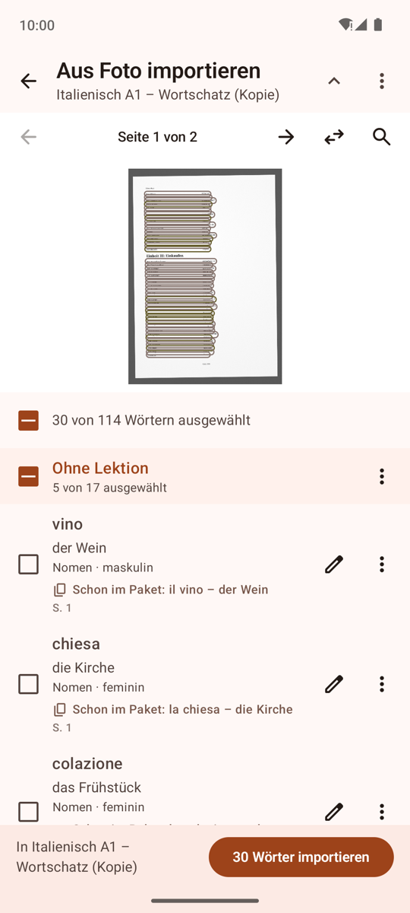
- Tippe im Editor auf die Plus-Taste und wähle Aus Foto importieren. Oder beginne ein Paket mit Neues Paket aus Foto in den Sprachpaketen.
- Foto aufnehmen öffnet deine Kamera-App, Fotos auswählen die Fotoauswahl, in der du mehrere Seiten wählen kannst. wörds sieht nur die Fotos, die du wählst, und fragt nach keiner Berechtigung. Nimm eine Seite pro Foto auf, so gerade und scharf wie möglich.
- Jede Seite wird gelesen, während du weitermachst; ein seitlich aufgenommenes Foto dreht wörds selbst. Liest sich eine Seite schlecht, bietet ihr Menü Drehen und zuschneiden: drehe sie und ziehe die Ecken an die Wortliste.
- Tippe auf n Wörter prüfen, um sie durchzusehen. Das Foto zeigt einen Rahmen um jedes gefundene Paar; tippe auf einen Rahmen, um seine Zeile zu finden, oder auf eine Zeile, um zu sehen, wo sie gelesen wurde. Zeilen mit Schreibweise prüfen waren schwer zu lesen, und Wörter, die schon im Paket sind, bleiben abgewählt. Tippe auf den Stift, um eine Zeile zu berichtigen, wähle ab, was du nicht willst, und tausche mit Spalten dieser Seite tauschen, wenn Wort und Übersetzung vertauscht sind. Überschriften auf der Seite werden zu Lektionen; In Lektion verschieben … legt Zeilen in eine andere oder neue.
- Tippe auf n Wörter importieren, um die ausgewählten Wörter hinzuzufügen. Die Zusammenfassung zeigt, wie viele Wörter in welche Lektionen gingen. Rückgängig entfernt sie wieder und bringt dich zurück zur Prüfung.
Du kannst einen Import verlassen und später weitermachen; er wartet, wo du aufgehört hast. Verwerfen löscht die Fotos und alles, was daraus gelesen wurde. Ein Import, der einen Tag liegen bleibt, wird gelöscht.
Einstellungen
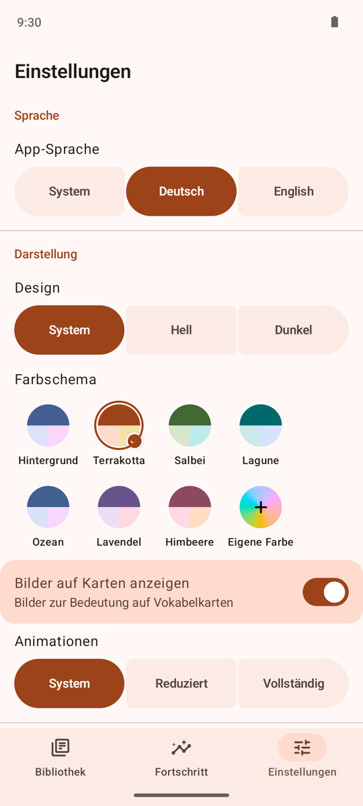
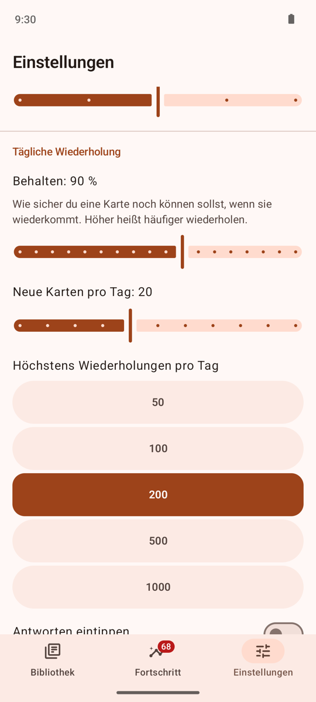
Sprache
- App-Sprache: wie im System, oder immer Deutsch oder Englisch.
Darstellung
- Design: hell, dunkel oder wie auf deinem Gerät eingestellt.
- Farbschema: die Farben deines Hintergrundbilds (ab Android 12), eines von sechs Farbschemata oder eine eigene Farbe. Die Farben folgen der Kontrasteinstellung des Systems (ab Android 14).
- Bilder auf Karten anzeigen schaltet die Bilder auf Vokabelkarten ein oder aus.
- Animationen: wie auf deinem Gerät eingestellt, reduziert oder vollständig.
Aussprache
- Automatisch abspielen spricht die Antwort, sobald eine Karte umgedreht wird.
- … beim Anzeigen abspielen spricht die Lernsprache, sobald eine Karte sie auf der Vorderseite zeigt.
- Sprechtempo macht die Stimme langsamer oder schneller.
Tägliche Wiederholung
- Behalten: wie sicher du eine Karte noch können sollst, wenn sie wiederkommt (80 bis 97 %, normalerweise 90 %). Höher heißt häufiger wiederholen.
- Neue Karten pro Tag und Höchstens Wiederholungen pro Tag begrenzen, wie viel die tägliche Wiederholung enthält.
- Antworten eintippen: In der heutigen Wiederholung tippst du jede Antwort ein, statt die Karte umzudrehen.
- Fehlende Akzente akzeptieren lässt eine Antwort, die sich nur in Akzenten unterscheidet, als fast richtig gelten; ausgeschaltet ist sie falsch.
- Fehlenden Artikel akzeptieren lässt ein Nomen ohne Artikel als fast richtig gelten; ausgeschaltet ist es falsch.
- Pfeile zurück und vor: ob die Pfeile auf einer Karte Seite für Seite oder Karte für Karte blättern; siehe Zurückblättern und korrigieren.
- Tägliche Erinnerung und ihre Uhrzeit: siehe Erinnerung und Widget.
Schulkind-Modus
- Schulkind-Modus schaltet das verspielte Aussehen, den Jubel und die Coins ein oder aus; siehe Schulkind-Modus und Coins.
- Jubel nach … Wörtern hintereinander: 3, 5, 10, 15 oder 20 (normalerweise 5).
Daten
- Sprachpakete öffnet die Paketverwaltung.
- Lernfortschritt zurücksetzen löscht alle Antworten und Sitzungen, auch die des Artikeltrainings. Installierte Pakete und die Coins des Schulkind-Modus bleiben. Das lässt sich nicht rückgängig machen.
Über wörds
- Open-Source-Lizenzen listet die Bibliotheken, mit denen wörds gebaut ist; tippe auf eine, um ihre Lizenz zu lesen.
Eigene Farbe: Wähle Farbton und Farbigkeit (oder gib einen Hex-Code ein) und einen Stil. Die Vorschau zeigt das Ergebnis hell und dunkel.
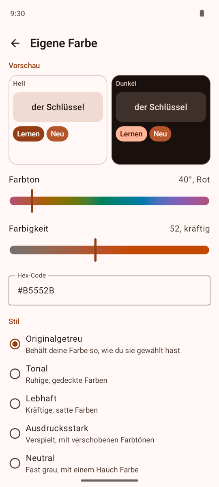
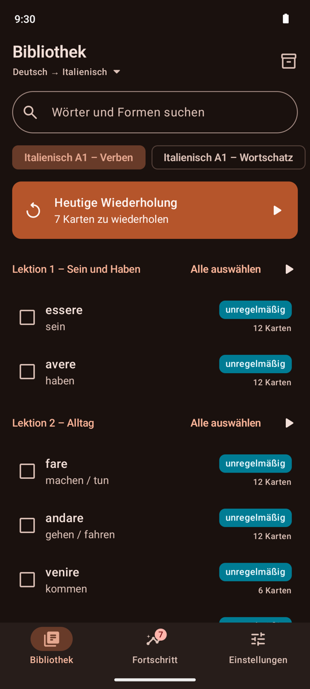
Tablets und Foldables
Auf großen Bildschirmen wandert die Navigation an die Seite, und die GitHub-Quellen zeigen die Liste der Quellen und die Pakete der gewählten Quelle nebeneinander. Der Paket-Editor zeigt die Wortliste und das Wort, das du bearbeitest, nebeneinander, die Prüfung eines Foto-Imports die Zeilen und das Foto. Auf einem halb geöffneten Foldable (Tischmodus) liegt die Karte über dem Knick und die Bewertungstasten darunter – so kannst du mit dem Gerät auf dem Tisch lernen. Solange die Bildschirmtastatur für eine eingetippte Antwort offen ist, rückt alles über den Knick.
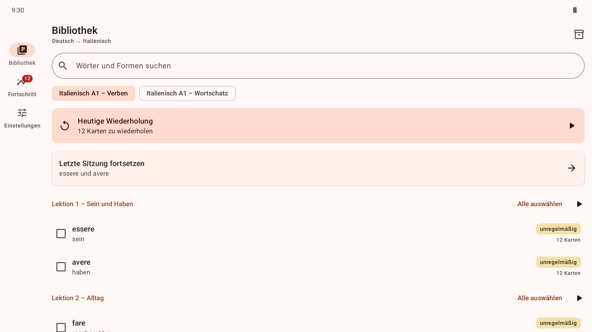
Barrierefreiheit und Datenschutz
- wörds funktioniert mit TalkBack, großer Schrift, hohem Kontrast, reduzierten Animationen, Tastatur und D-Pad. Auf einer Hardwaretastatur geht Esc zurück.
- wörds braucht kein Konto und funktioniert offline. Ins Internet geht es nur, um mit GitHub zu sprechen, und nur, wenn du GitHub-Quellen nutzt. Es gibt keine Werbung und kein Tracking. Fotos von Wortlisten werden auf deinem Gerät gelesen und nie hochgeladen.
- Dein Fortschritt, deine Einstellungen und deine eigenen Pakete sind Teil der Sicherung deines Geräts. Zugriffstokens nicht: Nach einer Wiederherstellung fragt wörds erneut danach.
Fragen und Probleme
Eine Karte hat keinen Ton. Deinem Gerät fehlt die Stimme der Sprachausgabe für diese Sprache. Tippe in der Meldung auf der Karte auf Installieren oder füge die Stimme in den Sprachausgabe-Einstellungen deines Geräts hinzu.
Ein Paket wurde nicht installiert. Die Meldung sagt, was damit nicht stimmt. Auf deinem Gerät wurde nichts geändert. Bitte den Autor des Pakets um eine korrigierte Fassung.
GitHub meldet einen Fehler. Prüfe deine Verbindung. Bei einem privaten Repository prüfe, ob das Zugriffstoken noch gültig ist und Lesezugriff auf die Inhalte des Repositorys hat. Ist das Anfragelimit von GitHub erreicht, sagt die Meldung, wann du es wieder versuchen kannst.
Wörter aus einem Foto kommen falsch an. Fotografiere die Seite noch einmal bei gutem Licht, flach und bildfüllend, oder schneide mit Drehen und zuschneiden nur die Wortliste aus. Jede Zeile lässt sich in der Prüfung berichtigen, bevor etwas importiert wird.
Ich will kein Italienisch lernen. Blende die mitgelieferten Italienisch-Pakete aus: Sprachpakete → ⋮ → Ausblenden. Sind alle Pakete ausgeblendet, sagt die Bibliothek das; importiere oder erstelle ein Paket oder blende eins wieder ein.
Ich will von vorn anfangen. Einstellungen → Lernfortschritt zurücksetzen löscht alle Antworten; die Pakete bleiben installiert.